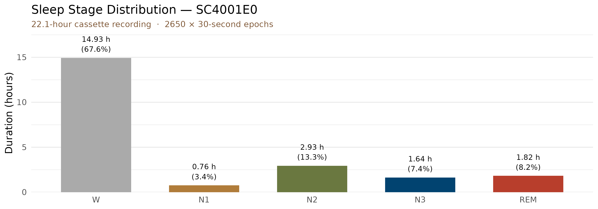
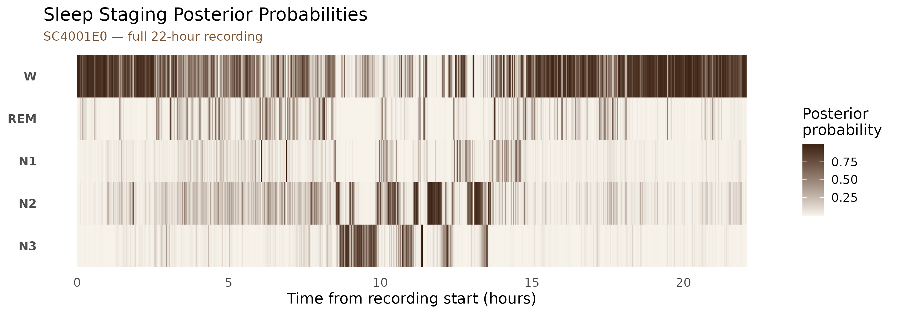
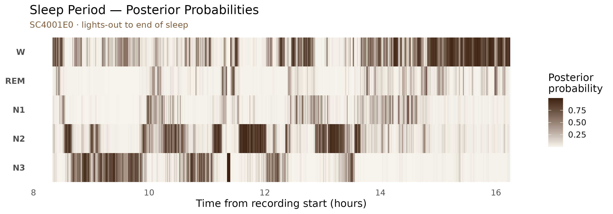
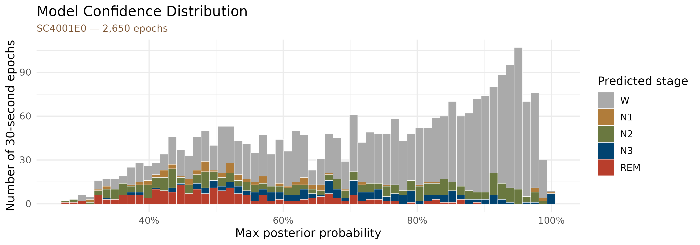

Sleep Staging: Live Walkthrough (SC4001E0)
Source:vignettes/articles/sleep-staging-demo.Rmd
sleep-staging-demo.RmdThis article runs the complete mrpheus sleep staging pipeline on
SC4001E0-PSG.edf from the Sleep-EDF Cassette study
(Kemp et al., 2000) — a 22-hour ambulatory PSG of a healthy young adult.
For download instructions see
vignette("sleep-staging").
The Sleep-EDF Cassette recordings start mid-afternoon and capture a full sleep-wake cycle plus the following morning. Around 75% of the recording is daytime Wake; the sleep period is approximately 7–8 hours.
Pipeline
The code below shows the full pipeline. Results are loaded from a pre-computed dataset bundled with the package (the EDF is too large to include, but the staging output is identical).
rec <- read_edf("~/mne_data/physionet-sleep-data/SC4001E0-PSG.edf")
psg <- prepare_psg(rec)
staging <- stage_epochs(
psg,
eeg_channel = "EEG Fpz-Cz",
eog_channel = "EOG horizontal",
emg_channel = "EMG submental"
)
staging
#> # A tibble: 2,650 × 7
#> epoch stage prob_N1 prob_N2 prob_N3 prob_REM prob_W
#> <int> <chr> <dbl> <dbl> <dbl> <dbl> <dbl>
#> 1 1 W 0.111 0.00803 0.00192 0.0335 0.846
#> 2 2 W 0.00878 0.0121 0.00364 0.00233 0.973
#> 3 3 W 0.00261 0.00409 0.00178 0.00269 0.989
#> 4 4 W 0.0621 0.0575 0.00901 0.0220 0.849
#> 5 5 W 0.102 0.143 0.0260 0.0845 0.644
#> 6 6 W 0.00921 0.0110 0.0137 0.00935 0.957
#> 7 7 W 0.00234 0.00647 0.00581 0.00378 0.982
#> 8 8 W 0.00475 0.0196 0.00973 0.100 0.866
#> 9 9 W 0.00750 0.0231 0.00910 0.0151 0.945
#> 10 10 W 0.00482 0.0141 0.00246 0.0264 0.952
#> # ℹ 2,640 more rowsStage distribution
stage_summary <- staging |>
count(stage) |>
mutate(
stage = factor(stage, levels = c("W", "N1", "N2", "N3", "REM")),
duration_h = round(n * 30 / 3600, 2),
pct = round(n / nrow(staging) * 100, 1)
) |>
arrange(stage)
stage_summary
#> # A tibble: 5 × 4
#> stage n duration_h pct
#> <fct> <int> <dbl> <dbl>
#> 1 W 1792 14.9 67.6
#> 2 N1 91 0.76 3.4
#> 3 N2 352 2.93 13.3
#> 4 N3 197 1.64 7.4
#> 5 REM 218 1.82 8.2
stage_summary |>
ggplot(aes(x = stage, y = duration_h, fill = stage)) +
geom_col(width = 0.65) +
geom_text(aes(label = paste0(duration_h, " h\n(", pct, "%)")),
vjust = -0.4, size = 3.2, lineheight = 1.1) +
scale_fill_manual(values = stage_pal) +
scale_y_continuous(expand = expansion(mult = c(0, 0.18))) +
labs(
x = NULL,
y = "Duration (hours)",
title = "Sleep Stage Distribution — SC4001E0",
subtitle = sprintf(
"%.1f-hour cassette recording · %d × 30-second epochs",
nrow(staging) * 30 / 3600, nrow(staging)
)
) +
theme_minimal(base_size = 12) +
theme(
legend.position = "none",
panel.grid.major.x = element_blank(),
plot.subtitle = element_text(colour = "#7C5432", size = 10)
)
Wake accounts for the majority of the recording because the cassette started at ~16:13 local time and ran continuously through the night and into the following afternoon.
Posterior probability heatmap
Each epoch carries five posterior probabilities (one per AASM stage) that sum to 1. Visualising all five simultaneously over the full recording reveals both the overall structure of the night and the model’s confidence at each point in time.
staging |>
select(epoch, starts_with("prob_")) |>
pivot_longer(starts_with("prob_"), names_to = "stage", values_to = "prob") |>
mutate(
stage = factor(sub("prob_", "", stage), levels = c("N3", "N2", "N1", "REM", "W")),
time_h = (epoch - 1L) * 30 / 3600
) |>
ggplot(aes(x = time_h, y = stage, fill = prob)) +
geom_tile() +
scale_fill_gradient(
low = "#F7F3EB",
high = "#3C2212",
name = "Posterior\nprobability",
guide = guide_colourbar(barheight = 4)
) +
labs(
x = "Time from recording start (hours)",
y = NULL,
title = "Sleep Staging Posterior Probabilities",
subtitle = "SC4001E0 — full 22-hour recording"
) +
theme_minimal(base_size = 12) +
theme(
plot.subtitle = element_text(colour = "#7C5432", size = 10),
panel.grid = element_blank(),
axis.text.y = element_text(face = "bold")
)
The dark band in the W row spanning the first ~8 hours and last ~5 hours reflects the daytime Wake periods before and after sleep. The sleep period (roughly hours 8.5–17) is visible as sustained activity in the N2, N3, and REM rows.
Sleep period in detail
Zooming into the sleep window (starting from just before lights-out at ~30,600 s ≈ hour 8.5) makes the ultradian architecture clearer.
staging |>
filter(epoch >= 1001L, epoch <= 1950L) |>
select(epoch, starts_with("prob_")) |>
pivot_longer(starts_with("prob_"), names_to = "stage", values_to = "prob") |>
mutate(
stage = factor(sub("prob_", "", stage), levels = c("N3", "N2", "N1", "REM", "W")),
time_h = (epoch - 1L) * 30 / 3600
) |>
ggplot(aes(x = time_h, y = stage, fill = prob)) +
geom_tile() +
scale_fill_gradient(
low = "#F7F3EB",
high = "#3C2212",
name = "Posterior\nprobability",
guide = guide_colourbar(barheight = 4)
) +
labs(
x = "Time from recording start (hours)",
y = NULL,
title = "Sleep Period — Posterior Probabilities",
subtitle = "SC4001E0 · lights-out to end of sleep"
) +
theme_minimal(base_size = 12) +
theme(
plot.subtitle = element_text(colour = "#7C5432", size = 10),
panel.grid = element_blank(),
axis.text.y = element_text(face = "bold")
)
Model confidence
High posterior probabilities indicate epochs the model is unambiguous about. Lower values reflect genuine signal ambiguity at stage transitions or in epochs with mixed features.
staging |>
mutate(
stage = factor(stage, levels = c("W", "N1", "N2", "N3", "REM")),
confidence = pmax(prob_N1, prob_N2, prob_N3, prob_REM, prob_W)
) |>
ggplot(aes(x = confidence, fill = stage)) +
geom_histogram(bins = 60, colour = "white", linewidth = 0.15) +
scale_fill_manual(values = stage_pal) +
scale_x_continuous(labels = scales::percent_format()) +
labs(
x = "Max posterior probability",
y = "Number of 30-second epochs",
fill = "Predicted stage",
title = "Model Confidence Distribution",
subtitle = "SC4001E0 — 2,650 epochs"
) +
theme_minimal(base_size = 12) +
theme(plot.subtitle = element_text(colour = "#7C5432", size = 10))
Most epochs concentrate near 1.0, reflecting high model confidence. The lower-confidence tail consists primarily of N1 epochs and brief transitions between stages.
Passing to hypnor
The staging tibble can be passed directly to
hypnor for hypnogram visualisation and sleep
architecture metrics:
hypnogram <- export_hypnogram(
staging,
epoch_s = 30,
start_time = rec$header$startTime,
participant_id = "SC4001"
)
# hypnor::plot_hypnogram(hypnogram)
# hypnor::compute_architecture(hypnogram)References
Kemp, B., Värri, A., Rosa, A. C., Nielsen, K. D., & Gade, J. (2000). A simple format for exchange of digitized polygraphic recordings. Electroencephalography and Clinical Neurophysiology, 69(5), 391–397. https://doi.org/10.1016/0013-4694(87)90048-7
Vallat, R., & Walker, M. P. (2021). An open-source, high-performance tool for automated sleep staging. eLife, 10, e70092. https://doi.org/10.7554/eLife.70092